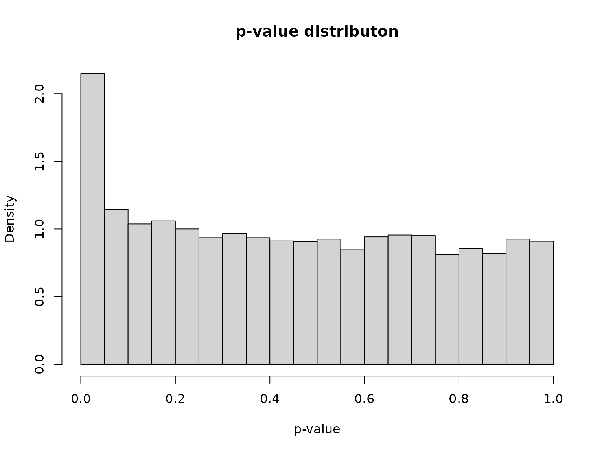
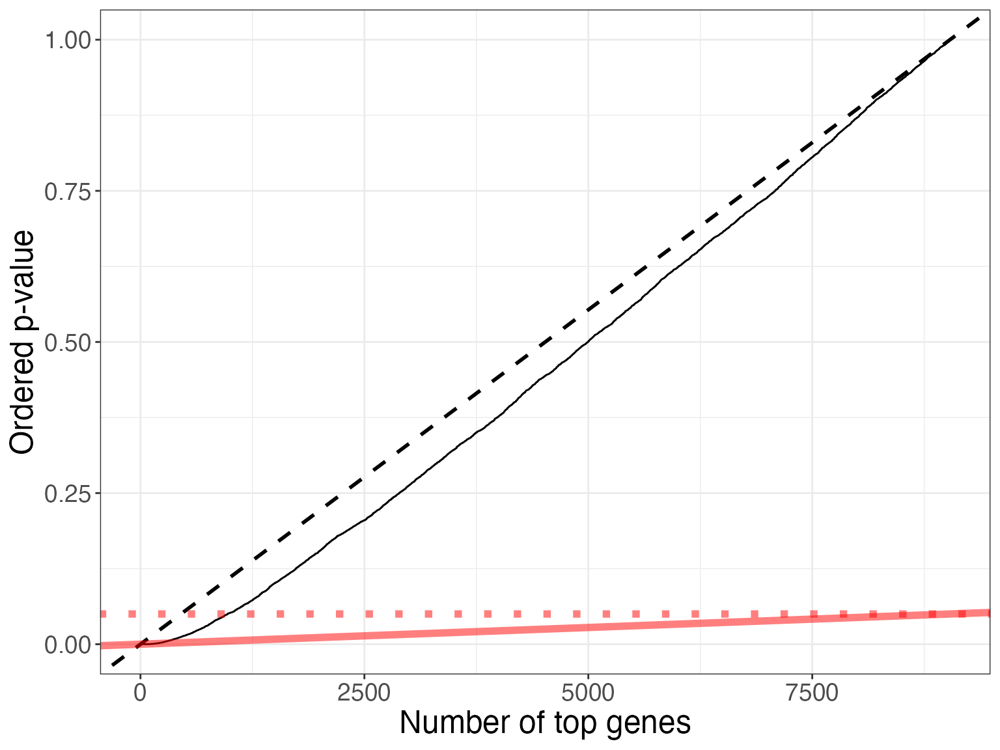
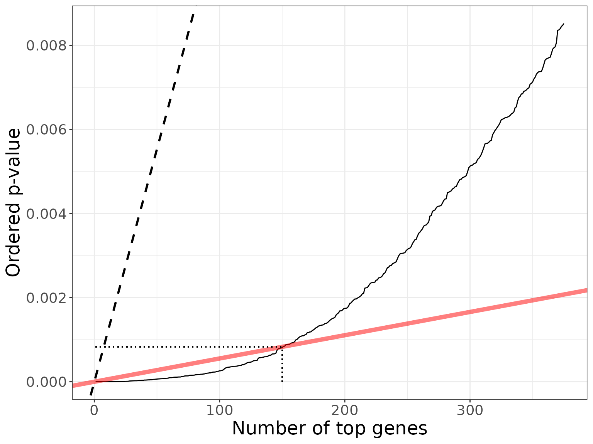
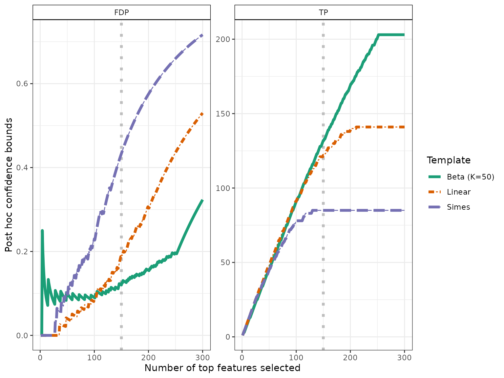
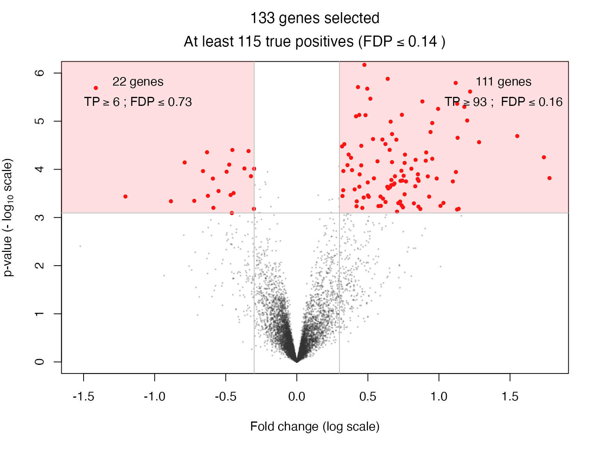

Permutation-based post hoc inference for two-group differential gene expression studies
Gilles Blanchard, Pierre Neuvial and Etienne Roquain
2025-07-25
Source:vignettes/post-hoc_differential-expression.Rmd
post-hoc_differential-expression.RmdThis vignette reproduces figures from Section 9 in the book chapter:
Blanchard, Neuvial, and Roquain (2021). It
demonstrates how the sanssouci
package may be used to obtain post hoc confidence bounds on false
positives in the case of differential gene expression analysis. After
showing the output of a classical differential analysis based on False
Discovery Rate control we illustrate the application of basic post-hoc
bounds derived from probabilistic inequalities. Then, we introduce more
powerful post hoc methods (introduced by Blanchard, Neuvial, and Roquain (2020)) that
yield tighter bounds by adapting to unknown dependence by randomization.
Finally we demonstrate the use of these methods on two applications of
post hoc methods:
- build confidence curves (envelopes) for the true or false positives and define differentially expressed genes accordingly
- perform statistical inference on the output of volcano plots
The methods described in this vignette are described in detail in the book chapter Blanchard, Neuvial, and Roquain (2021) and in the paper Blanchard, Neuvial, and Roquain (2020). A shiny application for volcano plots is also available at https://shiny-iidea-sanssouci.apps.math.cnrs.fr/.
require("ggplot2") # install.packages("ggplot2")
require("sanssouci") # remotes::install_github("sanssouci-org/sanssouci@develop")
require("sanssouci.data") # remotes::install_github("sanssouci-org/sanssouci.data")Set the seed of the random number generator for numerical reproducibility of the results:
set.seed(20200924)Motivation: a differential gene expression study
We focus on differential gene expression studies in cancerology. These studies aim at identifying genes whose mean expression level differs significantly between two (or more) populations, based on a sample of gene expression measurements from individuals from these populations. Specifically, we consider a data set studied in Bourgon, Gentleman, and Huber (2010).
This data set consists of gene expression measurements for patients with B-cell acute lymphoblastic leukemia (ALL) Chiaretti et al. (2005). These patients are classified into two subgoups, depending on whether or not they harbor a specific mutation called “BCR/ABL”:
The goal of this study is to understand the molecular differences at the gene expression level between the populations of BCR/ABL positive and negative (“NEG”) patients. For each patient, we observe a vector of gene expression values.
The most basic question to ask is:
For which genes is there a difference in the mean expression level of the mutated and non-mutated population?
This question can be addressed by performing one statistical test of no difference between means for each gene, and to define “differentially expressed” genes as those passing some significance threshold.
Below, the Welch test for differential expression is applied to each
gene. This can be done e.g. using the
sanssouci::rowWelchTests function:
categ <- ifelse(colnames(dat) == "BCR/ABL", 1, 0) # map to 0/1
dex <- data.frame(rowWelchTests(dat, categ))
pval <- dex[["p.value"]]We plot a histogram of the corresponding -values:
hist(pval, probability = TRUE, breaks = 20,
xlab = "p-value", main = "p-value distributon")
As expected, the distribution presents a large number of small -values (which include signals, i.e. differentially expressed genes) mixed with uniformly distributed -values (corresponding to non-differentially expressed genes).
Multiple testing correction: False Discovery Rate control
The state of the art approach to large-scale multiple testing is to control the False Discovery Rate (FDR), which is the expected proportion of wrongly selected genes (false positives) among all selected genes Benjamini and Hochberg (1995). The most widely used method to control this risk is the Benjamini-Hochberg (BH) procedure, which has been shown to control the FDR when the hypotheses corresponding to the non-differentially expressed genes are independent Benjamini and Hochberg (1995) or satisfy a specific type of positive dependence called Positive Regression Dependence on the Subset (PRDS) of truly non-differentially expressed genes Benjamini and Yekutieli (2001).
q <- 0.05
adjp_BH <- p.adjust(pval, method = "BH")
dex$adjp <- adjp_BH
S_BH <- which(adjp_BH <= q)
nBH <- length(S_BH)
nBH
#> [1] 150The application of the BH procedure at level is illustrated in the figures below (all genes are displayed in the first one, second one is a zoom on the top genes):
my_col <- "#FF000080"
dexo <- dex[order(pval), ] ## order genes by increasing p-values
dexo[["gene_order"]] <- 1:nrow(dex)
bh_plot <- ggplot(dexo, aes(x = gene_order, y = p.value)) +
geom_line() +
xlab("Number of top genes") + ylab("Ordered p-value") +
geom_abline(slope = 1/m, intercept = 0, linetype = 2, size = 1) +
geom_abline(slope = q/m, color = my_col, size = 2) +
# geom_segment(aes(x = nBH, y = 0, yend = q*nBH/m, xend = nBH), linetype = "dotted") +
# geom_segment(aes(x = 0, y = q*nBH/m, xend = nBH, yend = q*nBH/m), linetype = "dotted") +
geom_abline(slope = 0, intercept = q, linetype = "dotted", color = my_col, size = 2) +
theme_bw() +
theme(axis.text = element_text(size = 14),
axis.title = element_text(size = 18))
#> Warning: Using `size` aesthetic for lines was deprecated in ggplot2 3.4.0.
#> ℹ Please use `linewidth` instead.
#> This warning is displayed once every 8 hours.
#> Call `lifecycle::last_lifecycle_warnings()` to see where this warning was
#> generated.
#geom_text(x = 0, y = q, label = expression(alpha), color = my_col)
bh_plot
xmax <- nBH*2.5
ymax <- dexo$p.value[xmax]
bh_plot +
xlim(1, xmax) + ylim(0, ymax) +
geom_segment(aes(x = nBH, y = 0, yend = q*nBH/m, xend = nBH), linetype = "dotted") +
geom_segment(aes(x = 1, y = q*nBH/m, xend = nBH, yend = q*nBH/m), linetype = "dotted", col = 1)
#> Warning in geom_segment(aes(x = nBH, y = 0, yend = q * nBH/m, xend = nBH), : All aesthetics have length 1, but the data has 9038 rows.
#> ℹ Please consider using `annotate()` or provide this layer with data containing
#> a single row.
#> Warning in geom_segment(aes(x = 1, y = q * nBH/m, xend = nBH, yend = q * : All aesthetics have length 1, but the data has 9038 rows.
#> ℹ Please consider using `annotate()` or provide this layer with data containing
#> a single row.
#> Warning: Removed 8663 rows containing missing values or values outside the scale range
#> (`geom_line()`).
Basic posthoc bounds
Post hoc inference makes it possible to build confidence statements on the number of true/false positives within any set of genes: may be selected after seing the data (e.g., may be the set of rejections by the BH prcedure), and multiple choices of are allowed. Post hoc inference has been popularized by Goeman and Solari (2011).
alpha <- 0.1
pvalo <- dexo$p.value-Bonferroni bound
For a fixed , the generalized Bonferroni procedure consisting in rejecting the hypotheses in controls the -Family-Wise Error Rate: it ensures that with probability larger than , the number of false positives in is not larger than . As noted in Blanchard, Neuvial, and Roquain (2021), this leads to the post hoc bound:
As an application we calculate the bound associated to for :
k0 <- 100
S <- 1:nBH
FP_k0 <- sum(pvalo[S] >= alpha*k0/m) + k0 - 1
FP_k0/nBH
#> [1] 0.66This implies that with probability larger than 0.9 the false discovery proportion among the genes selected by the BH procedure at level is upper bounded by 0.66.
Simes bound
A more refined post hoc bound has been proposed by Goeman and Solari (2011) under the PRDS assumption. In the framework of Blanchard, Neuvial, and Roquain (2021) this bound is a direct consequence of the Simes (1986) inequality. It can be applied to the 150 rejections of the BH procedure as follows:
obj <- SansSouci(Y = dat, groups = categ)
res_Simes <- fit(obj, B = 0, family = "Simes", alpha = alpha) ## B=0 => no calibration!
FP_Simes <- predict(res_Simes, S_BH, what = "FP")The Simes bound implies that with probability larger than 0.9, the false discovery proportion among the genes selected by the BH procedure at level is upper bounded by 0.44. The Simes bound is sharper than the -Bonferroni bound because it is obtained from a joint control of all -FWER for all . The -Bonferroni bound will therefore not be considered further in this vignette.
Tighter confidence bounds by adaptation to unknown dependence
As discussed in Blanchard, Neuvial, and Roquain (2020), the above-described bound has two major limitations, being a consequence of the Simes inequality:
It is known to be valid only under certain positive dependence assumptions (PRDS) on the joint -value distribution. Although the PRDS assumption is generally accepted in the case of differential expression studies (which justifies the application of the BH procedure itself), it has not been formally proved to hold in this case.
It is not adaptive to the specific type of dependence at hand for a particular data set.
To bypass these limitations, Blanchard, Neuvial, and Roquain (2020) have proposed a randomization-based procedure known as -calibration, which yields tighter bounds that are adapted to the dependency observed in the data set at hand. A closely related approach has been proposed by Hemerik, Solari, and Goeman (2019). In the case of two-sample tests, this calibration can be achieved by permutation of class labels:
B <- 1000
res <- fit(obj, B = B, alpha = alpha, family = "Simes")An alternative to the Simes/Linear reference family is the Beta reference family:
K <- 50
res_Beta <- fit(res, B = B, alpha = alpha, family = "Beta", K = K)As expected from the theory, the post hoc bounds obtained after calibration by these methods is much tighter than the Simes bound:
resList <- list("Simes" = res_Simes,
"Linear" = res,
"Beta" = res_Beta)
names(resList)[3] <- sprintf("Beta (K=%s)", K)
bounds <- sapply(resList, predict, S_BH)
rownames(bounds) <- c("Lower bound on True Positives", "Upper bound on False Discovery Proportion")
knitr::kable(t(bounds), digits = 2)| Lower bound on True Positives | Upper bound on False Discovery Proportion | |
|---|---|---|
| Simes | 85 | 0.43 |
| Linear | 122 | 0.19 |
| Beta (K=50) | 132 | 0.12 |
In the next two sections we illustrate the use of these improved bounds in order to build
- confidence curves for the true or false positives
- confidence statements for volcano plots
Confidence curves on “top-” lists
In the absence of prior information on genes, a natural idea is to rank them by decreasing statistical significance, and a natural question to ask is:
Can we provide a lower confidence curve on the number (or proportion) of truly differentially expressed genes among the most significant genes?
We illustrate the use of post-hoc methods to provide this type of information. More specifcally, we build confidence statements on the number of true/false positives within the top most significant genes in a differential gene expression study, where may be defined by the user after seing the data, and multiple choices of are allowed.
The confidence curves obtained by calibration of the Simes and Beta families can be compared graphically to the (parametric) Simes curve that can be obtained from Goeman and Solari (2011):
conf_bounds <- lapply(resList, predict, all = TRUE)
# cols <- c("lightgray", "black", "darkgray")
cols <- RColorBrewer::brewer.pal(length(conf_bounds), "Dark2")
p <- plotConfCurve(conf_bounds, xmax = 300, cols = cols, legend.title = "Template")
p + geom_vline(xintercept = nBH, color = "gray", linetype = "dotted", size = 1.5) +
geom_line(size = 1.5)
Both calibrated curves outperform the Simes curve in this example.
Volcano plots
For an interactive volcano plot, see the volcano plot shiny application.
q <- 0.05
r <- 0.3Let us assume that we are interested in genes selected by the BH procedure at level and whose fold change is larger than in absolute value. The “fold change” is defined as the difference between the expression means of the two groups compared; it is an estimate of the effect size of a gene. This double selection corresponds to two sets of genes, with positive/negative fold change, which can be represented in the following plot:
ylim <- c(0, 6)
volcanoPlot(res_Simes, q = q, r = r, ylim = ylim)This type of plot is called a “volcano plot” Cui and Churchill (2003). Post hoc inference makes it possible to obtain statistical guarantees on selections such as the ones represented in the above figure.
The substantial gain in power offered by the above-described calibration is illustrated as follows for the Simes reference family:
volcanoPlot(res, q = q, r = r, ylim = ylim)and for the Beta reference family.
volcanoPlot(res_Beta, q = q, r = r, ylim = ylim)
The comparison between these bounds may be summarized by the following Table:
fc <- foldChanges(res)
S_pos <- which(fc >= r & adjp_BH <= q)
S_neg <- which(fc <= -r & adjp_BH <= q)
S_all <- union(S_pos, S_neg)
all_bounds <- function(S, resList) {
c(length(S), sapply(resList, predict, S, "TP"))
}
tab <- rbind(all_bounds(S_pos, resList),
all_bounds(S_neg, resList),
all_bounds(S_all, resList))
plab <- paste("BH-adjusted p.value <", q)
lab <- c(paste(plab, "&", " fold change > ", r),
paste(plab, "&", " fold change < ", -r),
paste(plab, "&", "|fold change| > ", r))
tab <- cbind(lab, tab)
cap <- "Post hoc bounds on true positives in user-defined gene selections"
#knitr::kable(tab, caption = cap, format = "latex")
knitr::kable(tab, caption = cap)| lab | Simes | Linear | Beta (K=50) | |
|---|---|---|---|---|
| BH-adjusted p.value < 0.05 & fold change > 0.3 | 111 | 60 | 86 | 93 |
| BH-adjusted p.value < 0.05 & fold change < -0.3 | 22 | 1 | 7 | 6 |
| BH-adjusted p.value < 0.05 & |fold change| > 0.3 | 133 | 74 | 107 | 115 |
Session information
sessionInfo()
#> R version 4.5.1 (2025-06-13)
#> Platform: x86_64-pc-linux-gnu
#> Running under: Ubuntu 24.04.2 LTS
#>
#> Matrix products: default
#> BLAS: /usr/lib/x86_64-linux-gnu/openblas-pthread/libblas.so.3
#> LAPACK: /usr/lib/x86_64-linux-gnu/openblas-pthread/libopenblasp-r0.3.26.so; LAPACK version 3.12.0
#>
#> locale:
#> [1] LC_CTYPE=C.UTF-8 LC_NUMERIC=C LC_TIME=C.UTF-8
#> [4] LC_COLLATE=C.UTF-8 LC_MONETARY=C.UTF-8 LC_MESSAGES=C.UTF-8
#> [7] LC_PAPER=C.UTF-8 LC_NAME=C LC_ADDRESS=C
#> [10] LC_TELEPHONE=C LC_MEASUREMENT=C.UTF-8 LC_IDENTIFICATION=C
#>
#> time zone: UTC
#> tzcode source: system (glibc)
#>
#> attached base packages:
#> [1] stats graphics grDevices utils datasets methods base
#>
#> other attached packages:
#> [1] sanssouci_0.16.0 ggplot2_3.5.2
#>
#> loaded via a namespace (and not attached):
#> [1] Matrix_1.7-3 gtable_0.3.6 jsonlite_2.0.0 compiler_4.5.1
#> [5] crayon_1.5.3 jquerylib_0.1.4 systemfonts_1.2.3 scales_1.4.0
#> [9] textshaping_1.0.1 yaml_2.3.10 fastmap_1.2.0 lattice_0.22-7
#> [13] R6_2.6.1 labeling_0.4.3 generics_0.1.4 knitr_1.50
#> [17] tibble_3.3.0 desc_1.4.3 bslib_0.9.0 pillar_1.11.0
#> [21] RColorBrewer_1.1-3 rlang_1.1.6 cachem_1.1.0 xfun_0.52
#> [25] fs_1.6.6 sass_0.4.10 cli_3.6.5 pkgdown_2.1.3
#> [29] withr_3.0.2 magrittr_2.0.3 matrixTests_0.2.3 digest_0.6.37
#> [33] grid_4.5.1 lifecycle_1.0.4 vctrs_0.6.5 evaluate_1.0.4
#> [37] glue_1.8.0 farver_2.1.2 codetools_0.2-20 ragg_1.4.0
#> [41] rmarkdown_2.29 matrixStats_1.5.0 tools_4.5.1 pkgconfig_2.0.3
#> [45] htmltools_0.5.8.1References
& Hall/CRC. https://hal.archives-ouvertes.fr/hal-02320543.